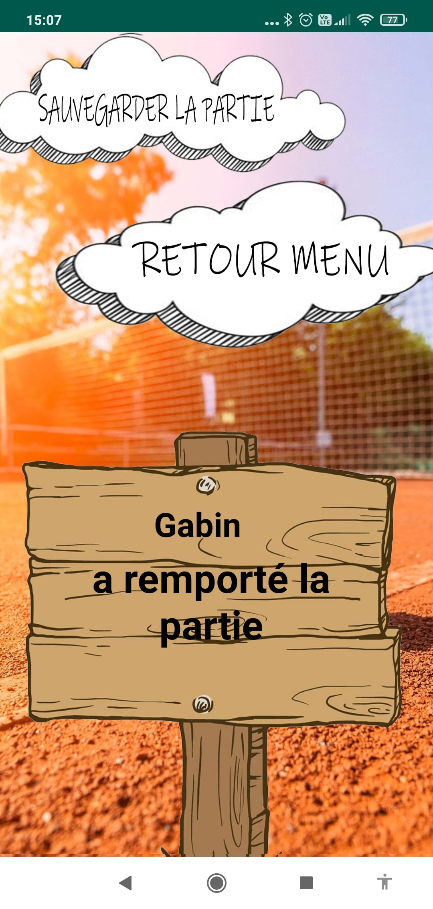
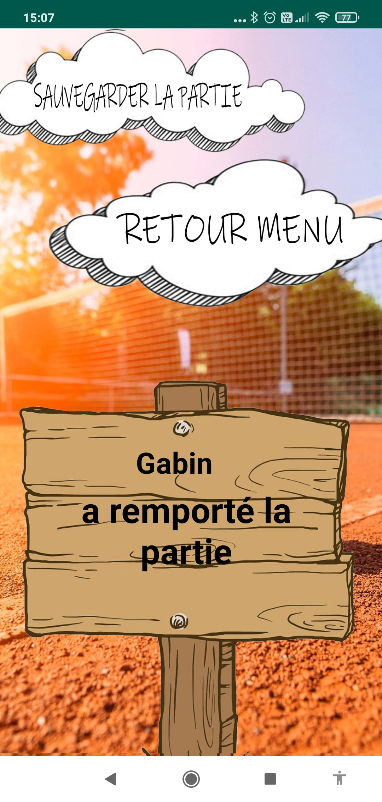

Qui suis-je?
Antoine, 22 ans, je suis actuellement étudiant en BTS SIO au lycée Bonaparte à Toulon. Passionné par la programmation, j'aime apprendre et transmettre le savoir que j'ai pu acquérir. J'aime voyager, découvrir de nouvelles cultures, j'ambitionne de travailler à l'étranger. Sportif, je pratique le tennis depuis mon plus jeune âge. Admissible dans la formation d'ingénieur informatique et multimédia du Conservatoire National des Arts et Métiers, je suis à la recherche d'une alternence dans le développement informatique.
Parcours scolaire
2013
Baccalauréat général série Economique et Sociale - Lycée du Coudon (La Garde)
2016
Licence de mathématiques - Université de Toulon (L1x2 - réorientation en cours de L2)
2019
BTS Services Informatiques aux Organisations option Solutions Logicielles et Applications Métier - Lycée Bonaparte (Toulon)
2021
Expériences professionnelles
Stages
Ceci est une expérience pro Ceci est une expérience pro Ceci est une expérience pro Ceci est une expérience pro Ceci est une expérience pro Ceci est une expérience pro
Ceci est une expérience pro Ceci est une expérience pro Ceci est une expérience pro Ceci est une expérience pro Ceci est une expérience pro Ceci est une expérience pro
Job étudiant
Ceci est une expérience pro Ceci est une expérience pro Ceci est une expérience pro Ceci est une expérience pro Ceci est une expérience pro Ceci est une expérience pro
Projets

GSB
Situation : Projet réalisé en PPE de deuxième année
Objectif : Réalisation d'une application WEB et d'une application mobile. Permettant de saisir et d’enregistrer tous les frais engagés par les visiteurs médicaux. Ainsi que un Service Windows permettant d'automatiser les remboursements tous les mois.
Technologies utilisées :
- HTML/CSS/JS, PHP et Ajax pour l'application WEB
- Java pour l'application mobile
- C# pour le service windows
- MariaDB pour le SGBD
TenniScore
Situation : Projet réalisé en PPE de première année
Objectif : TenniScore est une application mobile ayant pour but de faciliter la gestion d'un tableau des scores d'un match de tennis. Elle permet également de garder un historique de ses rencontres.
Technologies utilisées :
- Java
- SQLite

Maison des Ligues
Situation : Projet réalisé en PPE de deuxième année
Objectif : Réalisation d'une application WEB permettant à l'utilisateur de s'inscrire pour un évènement.
Technologies utilisées :
- HTML/CSS/JS
- Symfony 4
- MariaDB
GSB
×


TenniScore
×
 
